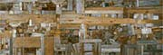

 Abstract is used to describe a composition based on forms existing in nature that are reduced or simplified and may no longer be recognizable. Morrison's collage, also on this Web site, is an abstract landscape.
Close